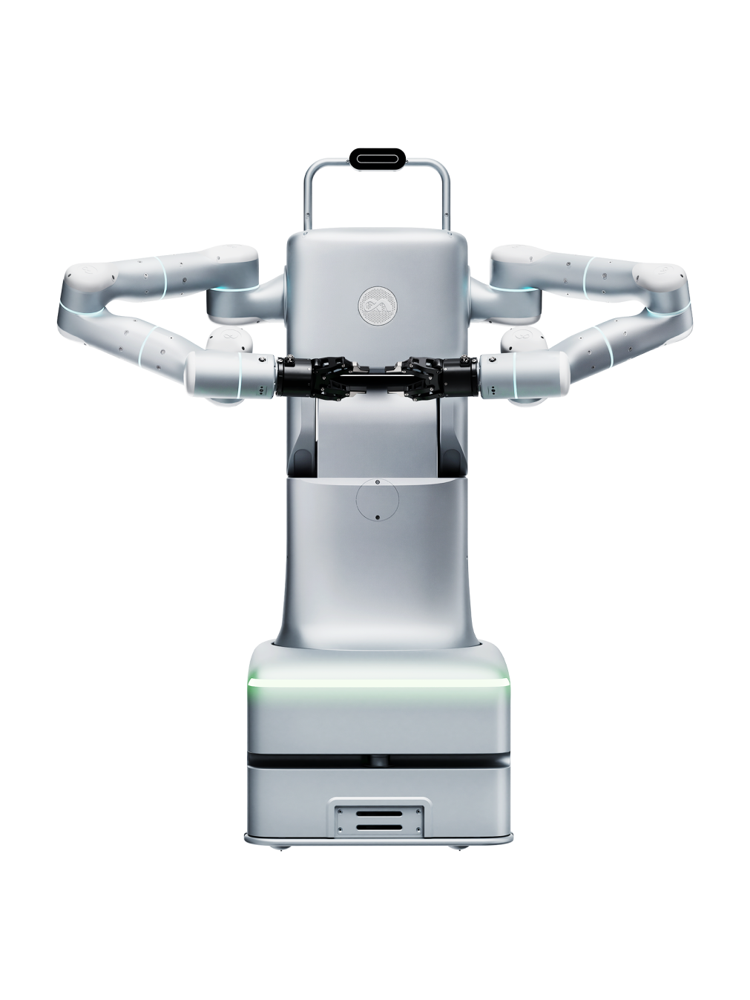

AICO 2
Other variants AICO 2-4 · AICO 2-10
Figures below are for AICO 2.
A wheeled humanoid robot from the United States.
Sources retrieved: 8 October 2026 (A, B, C)
- Applications
- Intended use, per the manufacturer
- Alongside MICO, Flexiv’s other humanoid-style robot, the AICO-2 industry-focused dual-arm mobile robot platform, will be on hand to demonstrate that an adaptive robot arm is truly multi-role ready, whether on its own or when combined with a humanoid-style body and AMR platform.Source and note: Intended use, per the manufacturerC flexiv.com/news/Flexiv_IROS%202026 · Retrieved 8 October 2026
- Indicative price
- Not stated

Manufacturer's own photo.
Specifications
3/32 specifications disclosed 29 not stated
29 fields hidden
How to read the figuresShow guideClose
- not statedNo source
- noyesStated by a source
- 0Reported as zero
- ASource
- A*Source with a caveat (select it)
- CERecords only what the manufacturer states regarding CE marking.
Select a source marker for source details and notes.
Physical2/13 disclosed
Power0/5 disclosed
Sensing and autonomy1/6 disclosed
Payload and expansion0/3 disclosed
Commercial0/1 disclosed
Compliance & certifications0/4 disclosed
Notes
Flexiv calls AICO a human-inspired platform for the development of embodied intelligence, built around its Rizon series adaptive robots.
Flexiv calls AICO-2 an industry-focused dual-arm mobile robot platform.
Both AICO 2 versions drive on a dual-wheel differential base.
The reach is 780 mm for AICO 2-4 and 845 mm for AICO 2-10.
Flexiv says it was founded in Santa Clara in 2016.
Sources
One line per source, not per figure: a source has one retrieval date.
- Aflexiv.com/product/robot-systemMain source. Retrieved 8 October 2026
- Bflexiv.com/software/rdk/manual/ros2_bridge.htmlSecondary. Retrieved 8 October 2026
- Cflexiv.com/news/Flexiv_IROS%202026Retrieved 8 October 2026